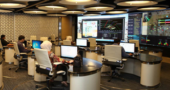
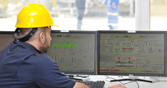
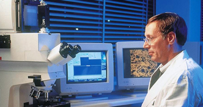

KWIDF
GC-01 Kuwait Integrated Digital Field (KwIDF) project

KOC launched GC-01 Kuwait Integrated Digital Field (KwIDF) pilot project in South &East Kuwait, Burgan Field, with actual field implementation starting in end of 2009. KwIDF vision is to achieve integrated operations for measurement, model and control of oil field asset where informed decisions are made effectively and consistently in a collaborative work environment by right people at the right time through availability of real time accurate data, situated in a right space.
The Reasons of Adopting KwIDF are as below:
• A challenging 2030 strategy that KOC has adopted to boost and sustain production at 4.0 MMBOPD. This has led to a greater focus on new technologies in order to enhance wells’ productivity, reduce well down time and enhance reservoir recovery. Meeting this aggressive target would not be possible without introduction of new, pioneering technology whilst changing the way we work.
• To increase Recovery and Enhance production by creating collaborative decision environment through real time validated data availability, automation and right time decision support information for production optimization, reservoir management, utilizing latest and most suitable digital oil field technology. The crux is KwIDF will help us in managing our reservoir more efficiently.
• To support KOC initiative of cutting operating cost by optimizing operations.
• KOC’s increasing commitment towards HSE. KwIDF tremendously improves operational safety as there will be less of human intervention in well operation. KwIDF will also protect the environment as there will be more timely detection of oil/gas leakage from flow lines.
• Economies of scale - Research and Technology Group noticed that multiple new technologies were being reviewed and piloted which all have elements of Smart Field System and concluded that it would be more effective to integrate all these new technologies into one concept.
• Motivate young Kuwaiti workforce in contributing to oil sector by providing them with the most innovative technologies available in the world. KwIDF is a mean of developing and investing in our young workforce and equipping Kuwait for the future
GC-01 KwIDF is a novel and innovative KOC concept, developed in-house by Research &Technology Group of KOC. The workflows are smart and automated, designed after studying the actual field requirements and the process is designed on the specific field needs. This is the first time that such a project has been initiated and developed of this nature.
The scope of GC-01 KwIDF project includes extensive instrumentation at all well sites, presently numbering around seventy, transmission of the data real time to a specially designed Collaboration Center Room, data validation, mining and cleansing, model update and generation of recommendation through various optimization scenarios as a result of automated and smart workflow executions. There has been an integration of surface and subsurface in all optimization decisions and this is novel in the industry. Continual change management exercise is being conducted and engagement of experts has led to exhaustive selection and training process for the KOC engineers to work in the new environment. The world of collaboration has been given a new meaning through a careful design of the work place, equipped with the latest and best technologies available in the world.
The KwIDF project involves the deployment of complete end-to-end systems. These systems involve a wide range of new and existing technologies. KOC decided not to take the traditional approach and implement only proven technologies, but also to promote innovation and deploy new generation technologies that may not be fully proven in the oil and gas industry.
GC-01 KwIDF project was initiated with the core objective of production optimization. It involves the deployment of new, leading edge digital instrumentation to wells located in the second largest oil field in the world (Great Burgan Field) connected to Gathering Center 1. Information / data acquired through instruments at each well site is communicated real-time (via solar powered RTU’s in the field) to a brand new, specifically designed Collaboration Center at KOC’s Ahmadi office. GC 1 will also be able to access this information via additional Decision Center (planned for construction at Burgan Field Office). This will complete a 3-dimensional Collaborative Work Environment (CWE).
The main benefits and objectives of the GC-01 KwIDF are as follows:
• Optimization of oil production using the latest software technologies and smart workflow processes. This includes both well and facility optimization. The optimization process shall be a closed loop decision and recommended process.
• To demonstrate improved real time well monitoring, reduce production loss from unplanned well downtime.
• To reduce risk to our people and the environment. Operators will be able to control oil production remotely from the Gathering Center using adjustable chokes installed at all the pilot wells. Amongst numerous benefits, this also means lesser manual intervention and improved HSE as it often exceeds 60 degree Celsius in the height of a Kuwaiti summer. Furthermore some of the main hazards KOC workers face like H2S, heat, driving, long hours are being addressed as real-time well monitoring is available at office environment and there are smart alarm systems for the engineers and operators to respond before the problem occurs.
• In addition, the GC-01 project will enable integrated surface-subsurface optimization. A decision taken at surface will be correlated with the effect it will bring to the reservoir fluid movement. This will lead to better understanding of the reservoir behaviour, production strategy inline to the actual reservoir conditions as well as improving the recovery rate in the long run.
Burgan Collaboration Center
In the Burgan Collaboration Center, experts across KOC will be able to work together to diagnose problems and opportunities, recommend and agree actions more quickly and easily. The aim is to reduce the whole collaboration cycle from weeks to minutes, by:
 • Informed decision making ability through effective collaboration of all subject matter experts in a technically savvy work environment, with all ergonomics designed for effective communication and data access.
• Using the Collaboration Center to display information; extracting and presenting critical data in a way that busy operators and engineers can get to and understand quickly and easily
• Setting up and running meetings in the Collaboration Center quickly and as needed; enabling a wide range of experience and expertise to be brought to bear on a problem or opportunity
• Allowing easier collaboration between key teams in the South & East Kuwait Directorate; providing essential conferencing between the Field Development groups and their Operations colleagues to share knowledge and resolve problems together
• Speeding up the ability to take action: both at the Gathering Centre or through remote control of the wells.
The Collaboration Center contains latest multimedia systems, teleconferencing equipment, visual display walls, security systems and touch screens to improve data analysis and collaborative decision making with the GC-01 facility and Burgan Field Center.
The project is being successfully implemented and has been appreciated by the end users. Everyone in the Company is excited by the project and the benefits it has brought in, enabling to operate our field in a smarter and intelligent way.
Q8 Research & Technology Center
Q8 Research & Technology Centre is located in the Netherlands in Europoort, Europe’s most important port and industrial area. One of its main responsibilities is to develop cost effective product formulations for lubricating oils, prime products, aerosol propellant and bitumen which are marketed under the Q8 brand. Lubricating oil, aerosol propellant and bitumen formulations are made using products derived from Kuwait crude oil, ensuring high quality and consistency.
New environmental regulations place heavy demands on these products. Careful attention is paid to customer needs by taking into account both functional requirements and legislative demands. Support is also provided on safety, health and environmental issues related to the handling of petroleum products.
The centre’s main thrust is in applied research where in depth investigations are carried out into future technical requirements of petroleum products in relation to refining processes and customer and legislative demands. As the central technical facility, Q8 Research & Technology Centre is responsible for all new product development, product specifications, safety data sheets, quality control procedures and the specification of most of the purchased materials.
The centre also provides quality control for Q8’s Europoort refinery. In addition to testing and certificating all final products, we cooperate in problem solving, optimising the daily operation of the units and selecting new test techniques. For all these activities Q8 Research & Technology employs specialists in petroleum products, backed by physical, analytical, chemical and performance test laboratories equipped with state of the art instruments.